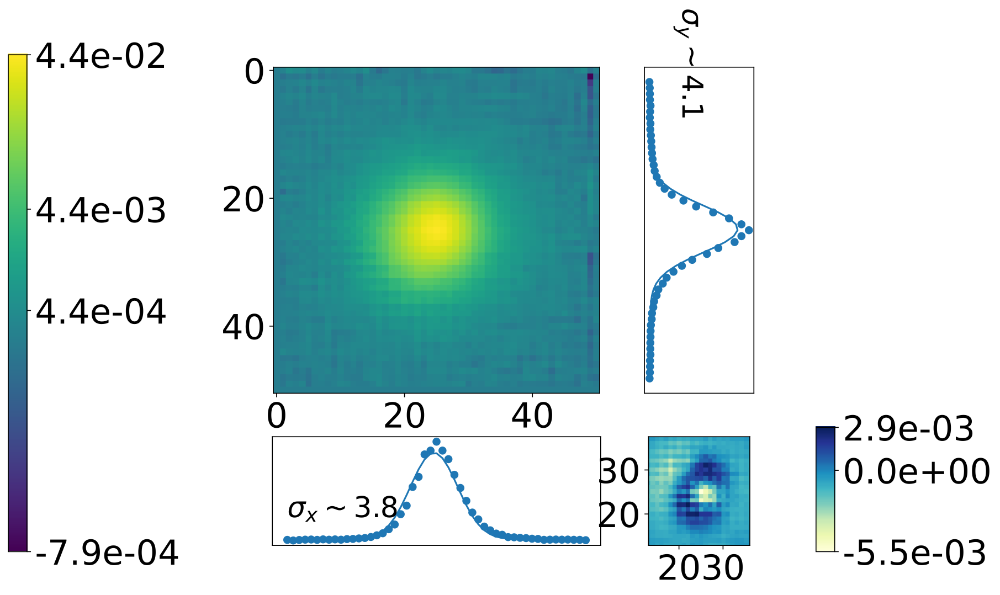
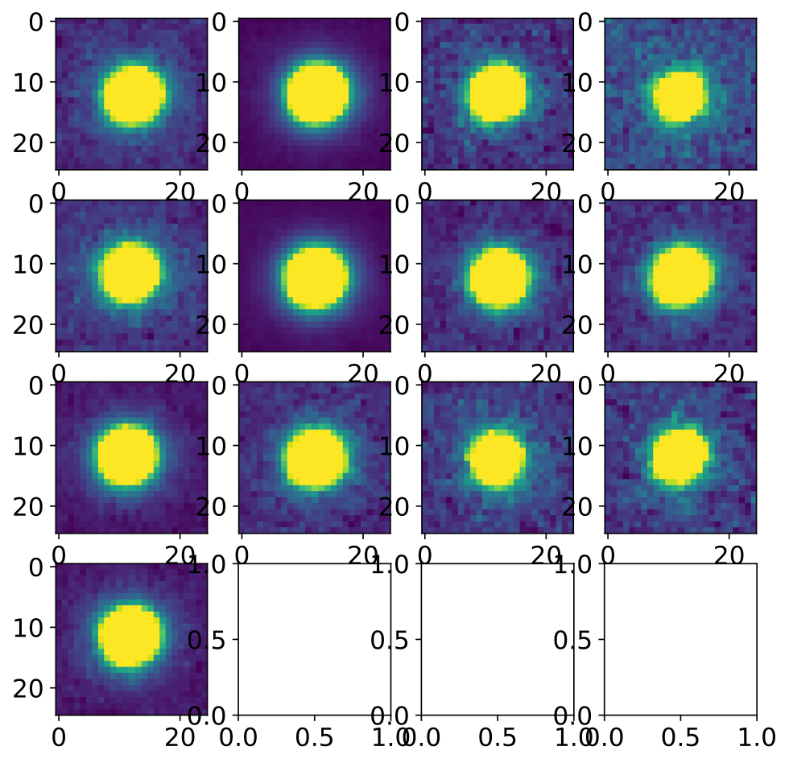

Examples¶
Using Your Own Data¶
In order to measure the detection efficiency for your image data, you must open the fits files, astropy.io.fits.open. There is an LCO example provided for reference. In this example, we have a strongly lensed galaxy-galaxy system with image dirs (in the efficiency_pipeline/lco_pipe_example/sdssj2309-0039/ folder)
dia_out, dia_trim, source_im, and a table of predicted peak lensed SNIa mags peakGLSN.csv . The directories contain the differences, single visit exposures, and the file which you’d like to do the analysis for. First we can read in these images (and that table) taking/printing the necessary values from source file header:
image,diff_image,ref_image,glsnID = lco_fakeSNpipeline.lco_pipe_ex()
Out:
filename ~ cpt1m010-fa16-20200816-0229-e91_trim.fits (groupid SDSSJ2309-0039) has L1fwhm ~ 1.491417758955098 pixels, pixscale ~ 0.389 arcsec/pixel, and skybr 21.9799995 mag/arcsec^2; zp ~ 23.60843226612176
glsn ~
Source ID Magnification Lens Z Source Z Peak Apparent Magnitude
-------------- ------------- ------ -------- -----------------------
SDSSJ2309-0039 4 0.29 1.0 23.22508768
Effective Point Spread Function¶
The first step is to find the stars in the image…
All sources can be found applying several photutil helpers, detection threshold is set using photutils.detection.detect_threshold, sources above the threshold value return a segmentation image object using photutils.segmentation.detect_sources, the image background is determined using photutils.background.Background2D, and finally photometric and morphological properties of the background subtracted image are determined using photutils.segmentation.source_properties, these all occur inside the lco_fakeSNpipeline.source_cat function, but first need to define the detection parameters
nsigma,kernel_size,npixels,deblend,contrast,targ_coord = 3,(3,3),int(np.round(L1fwhm/pixscale)),False,.001,None
print('Source Catalog using nsigma ~ {} (detection threshold above img bkg), gaussian kernel sized ~ {} pix, npixels ~ {} (connected pixels needed to be considered source), deblend ~ {} w contrast {}'.format(nsigma,kernel_size,npixels,deblend,contrast))
Out:
placeholder
Now run lco_fakeSNpipeline.source_cat to find the objects in image meeting criteria for detection
source_catalog = lco_fakeSNpipeline.source_cat(image,nsigma=nsigma,kernel_size=kernel_size,npixels=npixels,deblend=deblend,contrast=contrast,targ_coord=None)
cat,image,threshold,segm,targ_obj = source_catalog # unpacked to make a little clearer
Out:
placeholder
In a general case these objects from the catalog could be restricted to provide point sources, however in the case of this LCO survey done in rp, the positions of stars measured in similar filter are readily available Gaia.query_object_async, the results of the Gaia query within the image fov are taken
results = lco_fakeSNpipeline.gaia_results(image)
gaia,image = results # unpacked
Out:
placeholder
Cutouts around these stars are extracted from the image after passing criteria including that they are not overlapping with other sources and have a flux which is below the LCO detector saturation/non-linearity but still gave a strong signal in Gaia.
extracted_stars = lco_fakeSNpipeline.stars(results)
good_stars,image = extracted_stars # unpacked
Out:
placeholder
Finally, the effective point spread function is constructed for these stars using photutils.psf.EPSFBuilder. A 2D-Gaussian is fit to the resulting epsf using photutils.centroids.GaussianConst2D
EPSF = lco_fakeSNpipeline.ePSF(extracted_stars,oversampling=2)
epsf,fitted_stars = EPSF # unpacked
epsf_gaussian = lco_fakeSNpipeline.gaussian2d(epsf)
fit_gaussian,levels,xctr_vals,yctr_vals,image1,img_epsf,resid = epsf_gaussian # unpacked... levels list amplitude - sigma, ctr vals are gauss model sliced, image1 is array of values from gaussian fit in shape of epsf, img_epsf is epsf instance of it, resid is gauss - epsf
Out:
placeholder
Images showing the epsf against fitted gaussian, as well as the extracted stars that went into the epsf are made.
 {kind=link}
{kind=link}